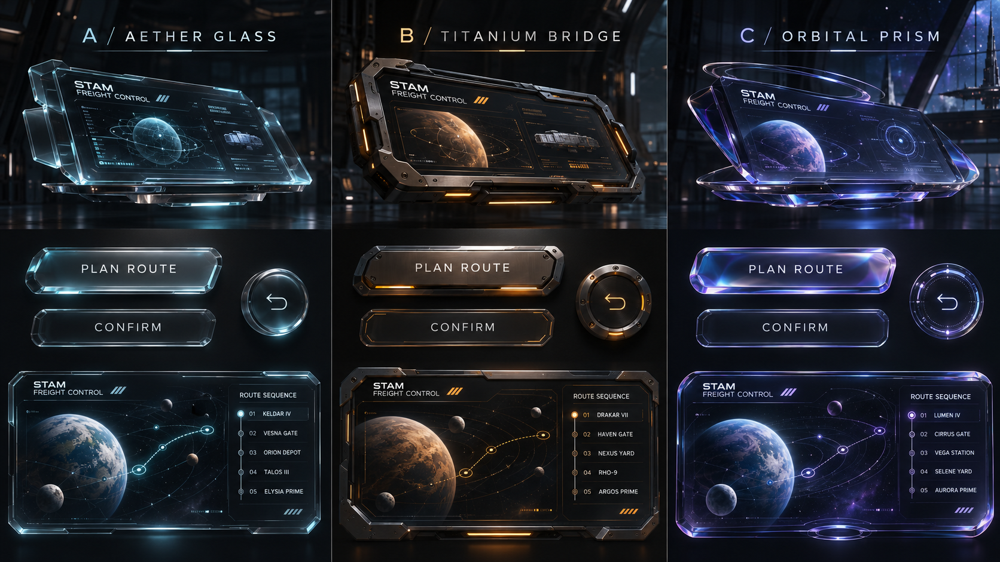

FREIGHT CONTROL / MATERIAL STUDIES
운송을 지휘하는 공간.
실사 재질과 입체적인 조작부. 정보는 선명하게, 움직임은 익숙하게.
STUDY
001—003
001—003

✧
STAM FREIGHT CONTROL스모크 글라스 / 실버 베벨 / 아이스 블루 발광
DESIGN SIMULATION 01
STAM / FLIGHT SYSTEMS하나의 계획 · 세 개의 콘솔DESIGN PROTOTYPE
TACTILE CONTROLS
버튼도 같은 장비의 일부로.
직접 눌러 상태와 빛의 변화를 비교해보세요.
ONE TYPE FAMILY
한글·영문·숫자까지 한 서체.
아래는 실제 폰트입니다. 카드를 누르면 전체 화면에 적용됩니다.